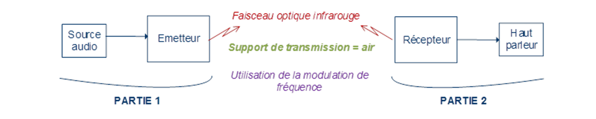
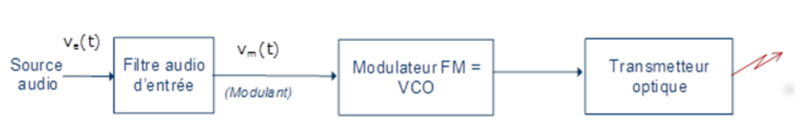
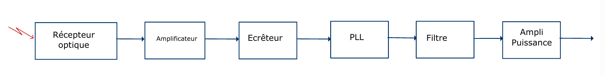

Objectif : concevoir une liaison optique infrarouge basée sur une modulation de fréquence (FM) pour transmettre un signal audio dans l’air.
La chaîne globale : source audio → émetteur → faisceau IR → récepteur → haut-parleur. Chaque bloc a été dimensionné, puis réalisé et soudé.

récepteur)" />L’émetteur réalise la modulation de fréquence du signal audio via un VCO, puis convertit ce signal modulé en un flux infrarouge.
Chaque sous-ensemble a été dimensionné (valeurs, polarisation, gain) puis assemblé / soudé pour tester bloc par bloc.

Le récepteur détecte le flux IR avec une photodiode, conditionne le signal, puis effectue la démodulation FM via une PLL afin de restituer l’audio.
Comme côté émetteur, chaque étape a été dimensionnée puis assemblée pour valider la chaîne complète.

La chaîne complète a été validée en conditions réelles : émetteur et récepteur placés face à face à ~5 m.
Le système permet d’émettre de la musique et de l’écouter côté récepteur, avec une restitution audio exploitable après démodulation PLL et filtrage.
Points clés : choix des gains, limitation (écrêtage), stabilité PLL et filtrage audio pour améliorer la qualité.